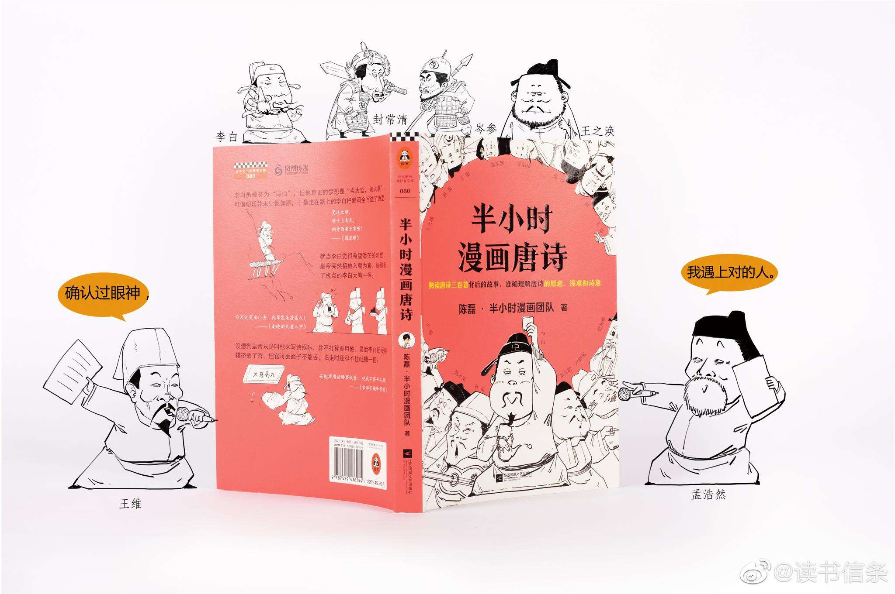

《半小时漫画唐诗》
读懂唐诗，从唐诗背后的故事开始。
通过手绘漫画和段子，陈磊（笔名：二混子）领衔的半小时漫画团队带我们重新读懂了那些从小背到大的唐诗：李白喊出“安能摧眉折腰事权贵，使我不得开心颜”是因为朝廷总不让他当大官，内心憋屈；王之涣写下“欲穷千里目，更上一层楼”，不是因为立志从军来到边塞抒情，而是因为他的家就在边塞；王维的“空山不见人，但闻人语响”能做到“诗中有画，画中有诗”，多少与他的豪华别墅和带薪休假有关……
抛开复杂的注释，丢掉公式化的赏析，从唐诗的创作故事着手，真正理解这些千古名句背后的喜怒哀乐、悲欢离合。
陈磊，漫画式科普的开创者，创立拥有全网700万粉丝的知识类公众号“混子曰”“混子谈钱”“着迷小课”及“混子谈命”，总阅读量超过2.5亿人次，曾获网站度新锐作家、年度挚爱阅读大使等称号。
陈磊以及其组创的半小时漫画团队，致力用漫画语言普及通识教育，无论学习哪个领域知识，这套书都将成为你学习路上的头一个“半小时”。
| 作品名称 |
半小时漫画唐诗 |
文学体裁 |
图书 / 非虚构 |
| 出版社 |
江苏凤凰文艺出版社 |
作 者 |
陈磊·半小时漫画团队 |
| 上市时间 |
2019年5月 |
题 材 |
漫画 |
| |
|
ISBN |
9787559436184 |
| |
|
字 数 |
约 31,000 字 |